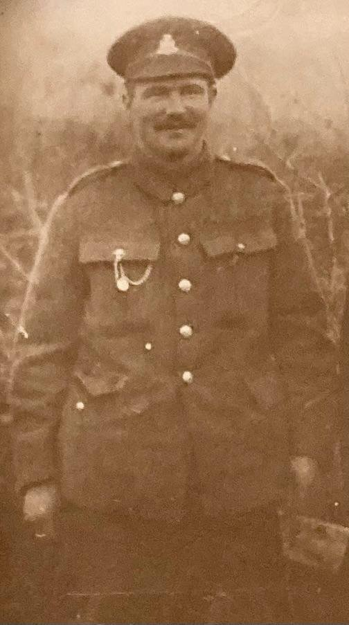

About this exhibition
Why we made this
Henry hardly ever talked about the war. This exhibition is his family's way of telling his story for him, and of saying thank you.
Dedication
In proud and loving memory of
Lance Corporal Henry John Bowles
1st Battalion, Somerset Light Infantry
1st Battalion, Wiltshire Regiment
Made by his family, to celebrate and remember our hero, who fought for our freedom.
And for every man who stood beside him.
Who he was

Henry, known as Harry, was the eldest of twelve children, born into a family who lived in a small terraced house by Yeovil Junction at Stoford. He was a farm hand. In 1915 he volunteered for the Somerset Light Infantry, months before anyone could be made to join.
- Number
- 29774
- Rank
- Lance Corporal, from January 1918
- Units
- Somerset Light Infantry, to France in summer 1915; 8th Entrenching Battalion; 1st Battalion, Somerset Light Infantry, from December 1915; 1st Battalion, Wiltshire Regiment, from July 1916
- Wounded
- 1 July 1916, the first day of the Somme, in the attack on Redan Ridge
- Taken prisoner
- 24 March 1918, east of Frémicourt, during the German spring offensive; held at Münster
- Came home
- Landed at Hull on 4 December 1918, and married Ellen “Nell” Taylor that month
- Died
- 18 January 1963
From his service and casualty records, and the family's own papers. The sources for every fact are listed on the Sources and credits page.
Why a family exhibition
Like so many men of his generation, Henry came home and kept the war to himself. His granddaughter, Angela Wright, remembers that he “never talked to anybody about the War”. For a long time, the family knew only fragments: a wound on the Somme, a prison camp, a chest that was never right again.
In 2026 a great-great-granddaughter's school project led the family to the Somme and to Ypres, to stand in the fields where Henry fought. Coming home, we wanted to bring together everything we had learned, so that his story would not be lost again. We have tried to tell it carefully, keeping as close as we can to his own record.
The exhibition is free, has no adverts, and is made for family and anyone who would like to know him.
Who made it
- Angela Wright, Henry's granddaughter, whose written memories, Memories of Grandad, are the heart of this exhibition.
- Graeme Wright, Henry's great-grandson, who designed the exhibition and its visitor experience, and provided additional research.
- Tristan Cobb, Graeme's cousin, who supported the initial research.
- The wider Bowles family, who shared photographs, papers and memories.
The website was coded with Claude, an AI model made by Anthropic, working to Graeme's design.
With grateful thanks to The Rifles Berkshire and Wiltshire Museum in Salisbury for their help with Henry's records, to Frank, the guide who led the family's visit in August 2026 and shared his maps, and to the Imperial War Museums for their photographs.
What is real, and what is imagined
Everything you see carries a label, so you always know what you are looking at. Real records, family papers and photographs are marked as such. Henry's journal, his voice and the German soldiers' diaries are imagined, and always marked as AI reconstructions. Nothing imagined is ever added to his record.
How this exhibition was made explains exactly where and how AI was used.
For museums, archives and historians
We would be glad to share copies of the family's scans, photographs and Angela Wright's memoir for a museum's archive, and we welcome corrections to anything here. If you can tell us more about Henry, his battalions, or the men who served with him, we would love to hear from you.
- Sources and credits: every source, with where it is used.
- How this exhibition was made: research, the use of AI, accessibility and privacy.
- How to cite this exhibition.